전자기사 (2011-03-20 기출문제)
1과목: 전기자기학
1. 다음과 같은 맥스웰(Maxwell)의 미분형 방정식에서 의미하는 것은?
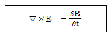
- 패러데이의 법칙
- 암페어의 주회적분법칙
- 가우스의 법칙
- 비오사바르의 법칙
(정답률: 알수없음)

2. 그림과 같은 유한길이의 솔레노이드에서 비투자율이 μs인 철심의 단면적이 S[m2]이고 길이가 ℓ[m]인 것에 코일을 N회 감고 I[A]를 흘릴 때 자기저항RmI[AT/Wb]은 어떻게 표현되는가?
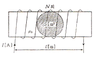
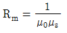
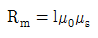
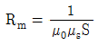
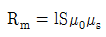
(정답률: 알수없음)
3. 간격 d[m]인 2개의 평행판 전극 사이에 유전율 의 유전체가 있다. 전극사이에 전압 Vmcosωt[V]를 가했을 때 변위전류 밀도는 몇 [A/m2] 인가?
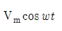
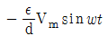
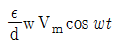
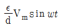
(정답률: 알수없음)
4. 공기 중에서 5[V], 10[V]로 대전된 반지름 2[cm], 4[cm]의 2개의 구를 가는 철사로 접속했을 때 공통 전위는 몇 [V] 인가?
- 6.25
- 7.5
- 8.33
- 10
(정답률: 알수없음)
5. 전류 2π[A]가 흐르고 있는 무한직선도체로부터 1[m] 떨어진 P점의 자계의 세기는?
- 1[A/m]
- 2[A/m]
- 3[A/m]
- 4[A/m]
(정답률: 알수없음)
6. 무한 직선도선이 λ[C/m]의 선밀도 전하를 가질 때 r[m]의 점 P의 전계 E는 몇 [V/m] 인가?
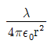
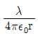
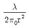
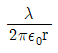
(정답률: 알수없음)
7. 자기 인덕턴스 L[H]인 코일에 전류 I[A]를 흘렸을 때, 자계의 세기가 H[AT/m]였다. 이 코일을 진공 중에서 자화시키는데 필요한 에너지 밀도[J/m3]는?
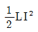
- LI2
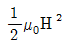
- μ0H2
(정답률: 알수없음)
8. 자기인덕턴스와 상호인덕턴스와의 관계에서 결합계수 k의 값은?
- 0≤k≤1/2
- 0≤k≤1
- 1≤k≤2
- 1k≤k≤10
(정답률: 알수없음)
9. 철심을 넣은 환상 솔레노이드의 평균 반지름은 20[cm]이다. 코일에 10[A]의 전류를 흘려 내부자계의 세기를 2000[AT/m]로 하기 위한 코일의 권수는 약 몇 회인가?
- 200
- 250
- 300
- 350
(정답률: 알수없음)
10. 진공 중에서 내구의 반지름 a=3[cm], 외구의 내반지름 b=9[cm]인 두 동심구 사이의 정전용량은 몇 [pF] 인가?
- 0.5
- 5
- 50
- 500
(정답률: 알수없음)
11. 평등 자계를 얻는 방법으로 가장 알맞은 것은?
- 길이에 비하여 단면적이 충분히 큰 솔레노이드에 전류를 흘린다.
- 길이에 비하여 단면적이 충분히 큰 원통형 도선에 전류를 흘린다.
- 단면적에 비하여 길이가 충분히 긴 솔레노이드에 전류를 흘린다.
- 단면적에 비하여 길이가 충분히 긴 원통형 도선에 전류를 흘린다.
(정답률: 알수없음)
12. 전기 쌍극자(electric dipole)의 중점으로부터 거리 r[m] 떨어진 P점에서 전계의 세기는?
- r에 비례한다.
- r2에 비례한다.
- r2에 반비례한다.
- r3에 반비례한다.
(정답률: 알수없음)
13. 무한 평면 도체표면에서 수직거리 d[m] 떨어진 곳에 점전하 +Q[C]이 있을 때 영상전하[image charge)와 평면도체간에 작용하는 힘 F[N]은 어느 것인가?
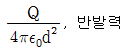
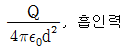
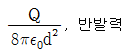
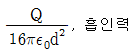
(정답률: 알수없음)
14. 정전용량이 1[μF]인 공기콘덴서가 있다. 이 콘덴서 판간의 1/2인 두께를 갖고 비유전율이 εr=2인 유전체를 그 콘덴서의 한 전극면에 접촉하여 넣었을 때 전체의 정전용량은 몇 [μF]이 되는가?
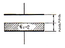
- 2[㎌]
- 1/2[㎌]
- 4/3[㎌]
- 5/3[㎌]
(정답률: 알수없음)
15. 공기 중에 그림과 같이 가느다란 전선으로 반경 a인 원형코일을 만들고, 이것에 전하 Q가 균일하게 분포하고 있을 때 원형코일의 중심축 상에서 중심으로부터 거리 x만큼 떨어진 P점의 전계의 세기는 몇 [V/m] 인가?
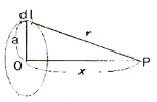
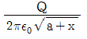
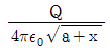
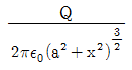
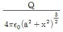
(정답률: 알수없음)
16. 자성체에 외부의 자계 H0를 가하였을 때 자화의 세기 J와의 관계식은? (단, N은 감자율, μ는 투자율이다.)
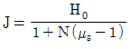
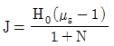
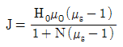
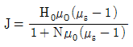
(정답률: 알수없음)
17. 유전율이 각각 Є1, Є2인 두 유전체가 접한 경계면에서 전하가 존재하지 않는다고 할 때 유전율이 Є1인 유전체에서 유전율이 Єs인 유전체로 전계 E1이 입사각 θ1=0°로 입사할 경우 성립되는 식은?
- E1=E2
- E1=Є1Є2E2
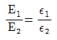
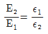
(정답률: 알수없음)
18. E=i+2j+3k[V/cm]로 표시되는 전계가 있다. 0.01[μC]의 전하를 원점으로부터 3i[m]로 움직이는데 필요한 일은 몇 [J] 인가?
- 3×10-8
- 3×10-7
- 3×10-6
- 3×10-5
(정답률: 알수없음)
19. 고유저항이 1.7×10-8[Ωㆍm]인 구리의 100[kHz] 주파수에 대한 표피의 두께는 약 몇 [mm] 인가?
- 0.21
- 0.42
- 2.1
- 4.2
(정답률: 알수없음)
20. 비투자율 350인 환상철심 중의 평균자계의 세기가 280[AT/m]일 때 자화의 세기는 약 몇 [Wb/m2] 인가?
- 0.12[Wb/m2]
- 0.15[Wb/m2]
- 0.18[Wb/m2]
- 0.21[Wb/m2]
(정답률: 10%)
2과목: 회로이론
21. 다음은 정현파를 대표하는 phasor이다. 정형파를 순시치로 나타내면?
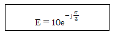
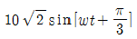
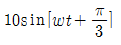
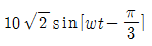
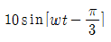
(정답률: 알수없음)
22. 그림과 같은 회로에서 t=0일 때 S를 닫았다. 전류 i(t)[A]는?
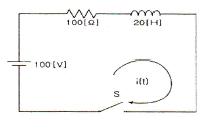
- 1+e5t
- 1-e-5t
- 1-e5t
- 1+e-5t
(정답률: 알수없음)
23. 그림과 같은 T형 4단자 회로의 임피던스 파라미터 Z21은?
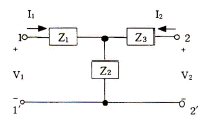
- Z1+Z2
- -Z2
- Z2
- Z2+Z3
(정답률: 알수없음)
24. 상태변수 해석을 하기 위하여 기본적으로 회로에 적용하는 이론적인 정리들 중 다음과 같은 설명에 적합한 정리는?
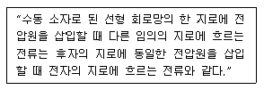
- 테브난 정리
- 가역 정리
- 테렐건 정리
- 밀만 정리
(정답률: 알수없음)
25. te-at에 대한 라플라스 변환을 구하면?
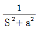
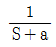
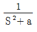
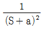
(정답률: 알수없음)
26. 두 회로간의 쌍대 관계가 옳지 않은 것은?
- KㆍVㆍL → KㆍCㆍL
- 테브낭 정리 → 노튼 정리
- 전압원 → 전류원
- 폐로전류 → 절점전류
(정답률: 알수없음)
27. 정 K형 여파기에 있어서 임피던스 Z1, Z2와 공칭 임피던스 K와의 관계는?
- Z1Z2=K2
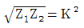
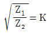
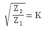
(정답률: 알수없음)
28. 4단자 망에서 하이브리드 h-파라미터에 대한 설명 중 옳지 않은 것은?
- h11 : 출력단락, 입력 임피던스
- h12 : 입력개방, 역방향 전압이득
- h21 : 출력단락, 순방향 전류이득
- h22 : 입력단락, 출력 어드미턴스
(정답률: 알수없음)
29. 두 코일이 있다. 한 코일의 전류가 매초 120[A]의 비율로 변화할 때 다른 코일에는 30[V]의 기전력이 발생하였다. 이때 두 코일의 상호 인덕턴스[H]는?
- 0.25
- 4
- 1.5
- -4
(정답률: 알수없음)
30. K의 비례요소가 존재하는 회로의 전달함수는?
- K
- K/s
- 1/K
- sK
(정답률: 알수없음)
31. 분류기를 사용하여 전류를 측정하는 경우 전류계의 내부 저항이 0.1[Ω], 분류기의 저항이 0.01[Ω]이면 그 배율은?
- 4
- 10
- 11
- 14
(정답률: 알수없음)
32. R-L-C 직렬회로에서 R=5[Ω], L=10[mH], C=100[μF]이라면, 공진주파수는 약 몇 [Hz] 인가?
- 129
- 139
- 149
- 159
(정답률: 알수없음)
33. 여러 개의 기전력을 포함하는 선형 회로망내의 전류분포는 각 기전력이 단독으로 그의 위치에 있을 때 흐르는 전류분포의 합과 같다는 것은?
- 키르히호프 법칙
- 중첩의 원리
- 테브난의 정리
- 노톤(Norton)의 정리
(정답률: 75%)
34. R, L, C 병렬 공진회로에 관한 설명 중 옳지 않은 것은?
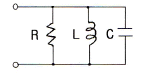
- R이 작을수록 Q가 낮다.
- 공진시 입력 어드미턴스는 매우 작아진다.
- 공진주파수 이하에서의 입력전류는 전압보다 위상이 뒤진다.
- 공진시 L 또는 C로 흐르는 전류는 입력전류 크기의 1/Q배가 된다.
(정답률: 알수없음)
35. 내부저항 r[Ω]인 전원이 있다. 부하 R에 최대 전력을 공급하기 위한 조건은?
- r = 2R
- R = r
- R = r2
- R = r3
(정답률: 알수없음)
36. 다은 4단자 회로망에서의 Y-Parameter Y11, Y21 은?
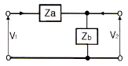
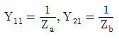
(정답률: 50%)
37. 지수함수 e-at의 라플라스 변환은?
- 1/S-a
- 1/S+a
- S+a
- S-a
(정답률: 알수없음)
38. 기본파의 10[%]인 제3고조파와 30[%]인 제5고조파를 포함하는 전압파의 왜형률은 약 얼마인가?
- 0.5
- 0.31
- 0.1
- 0.42
(정답률: 알수없음)
39. 그림과 같은 반파정류 정현파의 평균값은 약 얼마인가? (단, 0≦0ωt≦π일 때 S(t)=sinωt이고, π<ωt<2π일 때 S(t)=0인 주기함수이다.)
- 0.23
- 0.32
- 0.42
- 0.52
(정답률: 알수없음)
40. RLC 직렬 공진회로에서 선택도 Q를 표시하는 식은? (단, ωr은 공진 각 주파수이다.)
(정답률: 알수없음)
3과목: 전자회로
41. 병렬 공진 회로에서 공진주파수가 10[kHz]이고, Q가 50이라면 이 회로의 대역폭은?
- 100[Hz]
- 150[Hz]
- 200[Hz]
- 250[Hz]
(정답률: 알수없음)
42. 다음 중 시미트 트리거 회로의 용도로 가장 옳지 않은 것은?
- D/A 변환회로로 사용된다.
- 구형파 펄스 발생회로로 사용한다.
- 노이즈 등에 의한 오동작을 방지하기 위하여 사용된다.
- 임의의 파형에서 그 크기에 해당하는 펄스폭의 구형파를 얻기 위해서 사용된다.
(정답률: 알수없음)
43. 5[kHz]의 정현파 신호로 100[MHz]의 반송파를 FM 변조했을 때 최대 주파수편이가 ±65[kHz]이면 점유 주파수 대역폭은 몇 [kHz] 인가?
- 130[kHz]
- 140[kHz]
- 150[kHz]
- 160[kHz]
(정답률: 알수없음)
44. 전원 정류회로의 리플 함유율을 적게하는 방법으로 옳지 않은 것은?
- 입력측 평활용 콘덴서 정전 용량을 크게 한다.
- 평활용 초크 코일의 인덕턴스를 크게 한다.
- 출력측 평활용 콘덴서의 정전 용량을 작게 한다.
- 교류 입력전원의 주파수를 높게 한다.
(정답률: 알수없음)
45. 하틀리(Hartley) 발진기 회로에서 궤환 요소는?
- 용량
- 저항
- FET
- 코일
(정답률: 알수없음)
46. AM 변조기에서 발생하는 측파대의 수는?
- 1개
- 2개
- 3개
- 5개
(정답률: 알수없음)
47. JFET에서 IDSS=12[mA], VP=-4[V]이고, VGS=-2[V]일 때 드레인 전류 ID는 몇 [mA] 인가?
- 1.5[mA]
- 2.7[mA]
- 3[mA]
- 5[mA]
(정답률: 알수없음)
48. 100[V]로 첪전되어 있는 1[μF] 콘덴서를 1[MΩ]의 저항을 통하여 방전시키면 1초 후의 콘덴서 양단의 전압은? (단, 자연대수 e=2.71828이다.)
- 약 100[V]
- 약 63.2[V]
- 약 36.8[V]
- 약 18.4[V]
(정답률: 알수없음)
49. 다음 표는 부궤환에 의한 입ㆍ출력 임피던스의 변화이다. ( ) 안의 보기 내용 중 옳지 않은 것은?
- ① 증가
- ② 감소
- ③ 감소
- ④ 증가
(정답률: 알수없음)
50. 트랜지스터의 컬렉터 누설전류가 주위온도 변화로 20[μA]로 증가할 때 컬렉터 전류가 1[mA]에서 1.2[mA]로 되었다면 안정도 S는?
- 1.5
- 1.8
- 2.0
- 2.2
(정답률: 알수없음)
51. 수정 발진기는 수정의 임피던스가 어떻게 되는 주파수 범위에서 가장 안정하게 발진을 계속하는가?
- 저항성
- 유도성
- 용량성
- 저항성만 제외하고는 항상 안정한 발진
(정답률: 알수없음)
52. 이상적인 연산증폭기의 특징에 대한 설명으로 적합하지 않은 것은?
- 입력 오프셋전압은 0이다.
- 오픈 루프 전압이득이 무한대이다.
- 동상신호 제거비(CMRR)가 0이다.
- 두 입력전압이 같을 때 출력전압은 0이다.
(정답률: 알수없음)
53. FM 통신방식과 AM 통신방식을 비교했을 때, FM 통신방식에서 잡음개선에 대한 설명으로 가장 적합한 것은?
- 변조지수와 잡음 개선과는 관계없다.
- 변조지수가 클수록 잡음 개선율이 커진다.
- 변조지수가 클수록 잡음 개선율이 적어진다.
- 신호파의 크기가 작을수록 잡음 개선율이 커진다.
(정답률: 알수없음)
54. 불대수에서 (A+B)(A+C)와 등식이 성립하는 것은?
- ABC
- A+B+C
- A+BC
- AB+C
(정답률: 60%)
55. 전가산기를 반가산기 몇 개와 어떤 논리게이트 몇 개로 구성하는 것이 가장 적당한가?
- 반가산기 2개, AND 게이트 1개
- 반가산기 2개, OR 게이트 2개
- 반가산기 3개, OR 게이트 1개
- 반가산기 2개, OR 게이트 1개
(정답률: 알수없음)
56. 공통 이미터 증폭기 회로에서 이미터 저항의 바이패스 콘덴서를 제거하면 어떤 현상이 일어나는가?
- 잡음이 증가한다.
- 전압이득이 감소한다.
- 회로가 불안정하게 된다.
- 주파수 대역폭이 감소한다.
(정답률: 알수없음)
57. fT가 125[MHz]인 트랜지스터가 중간 주파수 영역에서 전압이득이 26[dB]인 증폭기로 사용될 때 이상적으로 이룰 수 있는 대역폭은 몇 [MHz] 인가?
- 3.5[MHz]
- 6.25[MHz]
- 9.45[MHz]
- 12.5[MHz]
(정답률: 알수없음)
58. 다음 중 FM 검파기가 아닌 것은?
- 비 검파기
- 다이오드 검파기
- 쿼드래처 검파기
- 포스터실리 검파기
(정답률: 알수없음)
59. 다음 중 수정발진자에 대한 설명으로 적합하지 않은 것은?
- 수정편은 압전기 현상을 가지고 있다.
- 수정편은 Q가 5000 정도로 매우 높다.
- 발진주파수는 수정편의 두께와 무관하다.
- 수정편은 절단하는 방법에 따라 전기적 온도특성이 달라진다.
(정답률: 64%)
60. 궤환이 없는 경우의 전압이득이 40[dB]인 증폭기에 궤환율(β)이 0.09의 부궤환을 걸면 이 증폭기의 이득은 몇 [dB] 인가?
- 10[dB]
- 20[dB]
- 30[dB]
- 40[dB]
(정답률: 10%)
4과목: 물리전자공학
61. 다음 중 Pauli의 배타율 원리가 만족되는 분포 함수는?
- Maxwell-Boltzmann
- Fermi-Dirac
- Schröinger
- Einstein
(정답률: 알수없음)
62. 진성 반도체에서 전자나 전공의 농도가 같다고 할 때, 전도대의 준위를 0.4[eV], 가전자대의 준위가 0.8[eV]라 하면 Fermi 준위는 몇 [eV]인가?
- 0.32
- 0.6
- 1.2
- 1.44
(정답률: 알수없음)
63. 제너(zener) 다이오드와 전자회로 소자로서 가장 유사한 전자관은?
- 2극진공관
- 정전압방전관
- 2차전자증배관
- 사이라트론
(정답률: 알수없음)
64. 반도체에 전계(E)를 가하면 정공의 드리프트(drift) 속도의 방향은?
- 전계와 반대 방향이다.
- 전계와 같은 방향이다.
- 전계와 직각 방향이다.
- 전계와 무관한 불규칙 운동을 한다.
(정답률: 알수없음)
65. Si 접합형 npn 트랜지스터의 베이스 폭이 10-5 [m]일 때, 차단 주파수는 약 몇 [MHz] 인가? (단, Si의 전자이동도 μn은 0.15[m2/Vㆍs]이다.)
- 4
- 12
- 15
- 31
(정답률: 42%)
66. 접합 트랜지스터에서 주입된 과잉 소수 캐리어는 베이스 영역을 어떤 방법에 의해서 흐르는가?
- 확산에 의해서
- 드리프트에 의해서
- 컬렉터 접합에 가한 바이어스 전압에 의해서
- 이미터 접합에 가한 바이어스 전압에 의해서
(정답률: 알수없음)
67. 정자계내에서 자계와 수직이 아닌 임의의 각도로 운동하는 전자의 궤도는?
- 직선 운동
- 원 운동
- 나선 운동
- 포물선 운동
(정답률: 50%)
68. 진성 반도체에서 온도가 상승하면 페르미 준위는?
- 도너 준위에 접근한다.
- 금지대 중앙에 위치한다.
- 전도대 쪽으로 접근한다.
- 가전자대 쪽으로 접근한다.
(정답률: 알수없음)
69. 서미스터(thermistor)에 대한 설명 중 옳지 않은 것은?
- 반도체의 일종이다.
- 온도제어 회로 등에 사용된다.
- 일반적으로 정(+)의 온도계수를 가진다.
- CTR(Critical Temperature Resistor)은 이것을 응용한 것이다.
(정답률: 알수없음)
70. 반도체(Semiconductors)에 관련된 연결 중 서로 옳지 않은 것은?
- 열전대 - Seebeck 효과
- 홀 발진기 - 자기 효과
- 전자 냉각 - Peltier 효과
- 광전도 셀 - 외부 광전 효과
(정답률: 70%)
71. 확산 정수 D, 이동도 μ, 절대온도 T간의 관계식을 옳게 나타낸 것은? (단, k는 볼츠만의 상수이고, e는 캐리어의 전하이다.)
(정답률: 알수없음)
72. 일함수(work function)의 설명 중 옳지 않은 것은?
- 금속의 종류에 따라 값이 다르다.
- 일함수가 큰 것이 전자 방출이 쉽게 일어난다.
- 표면장벽 에너지와 Fermi 준위와의 차를 일함수라 한다.
- 전자가 방출되기 위해서 최소한 이 일함수에 해당되는 에너지를 공급받아야 한다.
(정답률: 알수없음)
73. 균일자계 B에 자계와 직각 방향으로 속도 V를 갖고 입사한 전자의 각속도는? (단, 전자의 질량을 m, 전하량은 q)
(정답률: 알수없음)
74. 빛의 파동성을 입증할 수 있는 근거는?
- 산란현상
- 회절현상
- 광전현상
- 콤프턴(compton) 효과
(정답률: 알수없음)
75. 다음 중 SCR에 대한 설명으로 옳지 않은 것은?
- 전류제어형 소자이다.
- 게이트 전극이 전도에 영향을 준다.
- 터널 다이오드와 똑같은 특성의 부성저항 소자이다.
- 다이라트론(thyratron)과 비슷한 특성을 가지고 있다.
(정답률: 알수없음)
76. 루비 레이저(ruby Laser)의 펌핑(pumping) 에너지는?
- 직류 전원이다.
- 광적 에너지이다.
- 자계 에너지이다.
- 주파수가 낮은 교류 전원이다.
(정답률: 알수없음)
77. PN 접합 다이오드에 순바이어스를 인가할 때 공핍층 근처의 소수캐리어 밀도는 어떻게 변화하는가?
- P영역과 N영역에서 모두 감소한다.
- P영역과 N영역에서 모두 증가한다.
- P영역에서 증가하고, N영역에서 감소한다.
- P영역에서 감소하고, N영역에서 증가한다.
(정답률: 알수없음)
78. 다음 반도체의 설명 중 옳지 않은 것은?
- 진성반도체에 불순물 P를 주입하면 페르미 준위 EF가 전도대쪽에 가깝게 위치한다.
- 진성반도체에 불순물 Ga를 주입하면 페리미 준위 EF가 전도대쪽에 가깝게 위치한다.
- 페르미 준위가 전도대쪽에 가깝게 위치해 있으면 N형 반도체이다.
- 페르미 준위가 금지대 중앙에 위치해 있으면 진성반도체이다.
(정답률: 알수없음)
79. n형 불순물 반도체에서 hole의 농도를 나타낸 것은? (단, ni: 진성반도체의 캐리어 밀도, Nd: 도너 농도)
(정답률: 알수없음)
80. 열전자를 방출하고 있는 금속 표면에 전기장을 가하면 전자방출 효과가 증가하는 현상을 무엇이라 하는가?
- 지백 효과(Seeback effect)
- 톰슨 효과(Thomson effect)
- 펠티어 효과(Peltier effect)
- 쇼트키 효과(Schottky effect)
(정답률: 알수없음)
5과목: 전자계산기일반
81. 메모리 장치와 주변 장치 사이에서 데이터의 입출력 전송이 직접 이루어지는 것은?
- MIMO
- UART
- MIPS
- DMA
(정답률: 알수없음)
82. 고급 언어로 작성된 프로그램을 컴퓨터가 이해할 수 있는 기계어로 번역해 주는 프로그램은?
- 컴파일러(Compiler)
- 어셈블러(Assembler)
- 유틸리티(Utility)
- 연계편집 프로그램
(정답률: 알수없음)
83. 메모리로부터 읽혀진 명령어의 오퍼레이션 코드(Op-code)는 CPU의 어느 레지스터에 들어가는가?
- 누산기
- 임시 레지스터
- 논리연산장치
- 인스트럭션 레지스터
(정답률: 알수없음)
84. 논리회로를 설계하는 과정에서 최적화를 위한 고려 대상이 아닌 것은?
- 게이트 종류의 다양화
- 전파 지연 시간의 최소화
- 사용 게이트 수의 최소화
- 게이트 간의 상호 변수의 최소화
(정답률: 알수없음)
85. 다음 플립프롭의 진리표로 옳은 것은?
- ㈀ = 0, ㈁ = 0
- ㈀ = 1, ㈁ = 0
- ㈀ = 0, ㈁ = 1
- ㈀ = 1, ㈁ = 1
(정답률: 알수없음)
86. 프로그램이 수행되는 도중에 인터럽트가 발생되면 현 사이클의 일을 끝내고 프로그램이 수행될 수 있도록 현주소를 지시하는 것은?
- 상태 레지스터
- 프로그램 레지스터
- 스택 포인터
- 인덱스 레지스터
(정답률: 알수없음)
87. 어떤 디스크의 탐색시간이 20[ms], 데이터 전송시간이 0.5[ms], 회전지연시간이 8.3[ms]라고 할 때, 데이터를 읽거나 쓰는데 걸리는 평균 액세스 시간은?
- 9.65[ms]
- 11.2[ms]
- 28.8[ms]
- 30.8[ms]
(정답률: 알수없음)
88. 메모리 인터리빙(memory interleaving)의 사용 목적은?
- memory의 저장 공간을 높이기 위해서
- CPU의 idle time을 없애기 위해서
- memory의 access 회수를 줄이기 위해서
- 명령들의 memory access 첪돌을 막기 위해서
(정답률: 알수없음)
89. CPU가 명령어를 실행할 때의 메이저 상태에 대한 설명으로 옳은 것은?
- 실행 사이클은 간접주소 방식의 경우에만 수행된다.
- 명령어의 종류를 판별하는 것을 간접 사이클이라 한다.
- 기억장치내의 명령어를 CPU로 가져오는 것을 인출 사이클이라 한다.
- 인터럽트 사이클동안 데이터를 기억장치에서 읽어낸다.
(정답률: 알수없음)
90. 자료구조에 대한 설명으로 틀린 것은?
- 배열(array)은 원하는 자료를 즉시 읽어낼 수 있다.
- 연결 리스트(linked list)는 원하는 자료를 읽어내기 위해 리스트를 탐색하여야 한다.
- 연결 리스트는 자료의 추가나 삭제가 배열보다 어렵다.
- 배열은 기억장치 내에 연속된 기억공간을 필요로 한다.
(정답률: 알수없음)
91. 시프트 레지스터로 이용할 수 있는 기능이 아닌 것은?
- 나눗셈
- 곱셈
- 직렬전송
- 병렬전송
(정답률: 알수없음)
92. 외부하드디스크 드라이브, CD-ROM 드라이브, 스캐너 및 자기 테이프 백업 장치 등을 연결할 수 있는 장치는?
- RS-232C 포트
- 병렬 포트
- SCSI
- 비디오 어댑터 포트
(정답률: 알수없음)
93. two address machine에서 기억 용량이 216 워드이고 워드 길이가 40bit라면 이 명령형에 대한 명령코드는 몇 bit로 구성되는가?
- 8
- 7
- 6
- 5
(정답률: 알수없음)
94. 다음 중 C 언어가 높은 호환성을 갖는 이유가 아닌 것은?
- 프로그램간의 인터페이스가 함수로 통일
- 높은 이식성
- 자료형 변환이 자유로움
- 포인터 사용이 가능
(정답률: 알수없음)
95. 양수 A와 B가 있다. 2의 보수 표현 방식을 사용하여 A-B를 수행하였을 때 최상위 비트에서 캐리(carry)가 발생하였다. 이 결과로부터 A와 B에 대한 설명으로 가장 적절한 것은?
- 캐리가 발생한 것으로 보아 A는 B보다 작은 수이다.
- B-A를 수행하면 최상위비트에서 캐리가 발생하지 않는다.
- A+B를 수행하면 최상위비트에서 캐리가 발생한다.
- A-B의 결과에 캐리를 제거하고 1을 더해주면 올바른 결과를 얻을 수 있다.
(정답률: 알수없음)
96. 서브루틴 레지스터(SBR)에 사용하지 않는 마이크로프로세서 연산은?
- 복귀(RET)
- 점프(JUMP)
- 호출(CALL)
- 조건부 호출(conditional CALL)
(정답률: 알수없음)
97. 웹 페이지에서 문서 사이에 링크(LINK)가 가능하게 한 표준 언어는?
- HTML
- HTTP
- FTP
- BROWSER
(정답률: 알수없음)
98. 일반적으로 마이크로컴퓨터의 시스템 보드(System Board)상에 직접 연결되어 있는 장치가 아닌 것은?
- 마이크로프로세서(Micro Processor)
- ROM(Read Only Memory)
- RAM(Random Access Memory)
- 하드 디스크(Hard Disk)
(정답률: 알수없음)
99. 컴퓨터 시스템의 신뢰도 향상을 위하여 가장 중요시 되는 것은?
- 가상기억장치
- 결합허용 시스템
- 실시간 처리
- 부동소수점 연산
(정답률: 알수없음)
100. 전기신호에 의하여 자료를 기록하고, 삭제할 수 있는 ROM은?
- MASK ROM
- PROM
- EEPROM
- EPROM
(정답률: 알수없음)